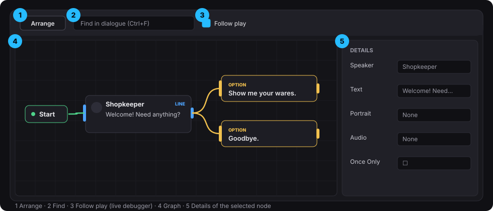

The dialogue editor
Double-click a Dialogue asset to open it.

- Graph (left): the conversation. It flows left to right.
- Details (right): the selected node's settings.
- Toolbar:
- Arrange: lays the whole graph out as a tidy left-to-right tree. Undo works.
- Find box (Ctrl+F)
- Follow play toggle (see Live debugger)
Asset settings (click an empty spot in the graph):
| Setting | What it does |
|---|---|
| Default Speaker | Name used by every line that has no speaker of its own. |
| Default Portrait | Portrait used by every line that has none. |
| UI Style | How this conversation is shown: UI.Dialogue.List, UI.Dialogue.Wheel, UI.Dialogue.Subtitle, or your own. Empty = the default widget. |
Working in the graph
- Adding nodes: right-click → Add Line / Option / Condition / Pick / End / Comment.
- Wires: drag from an output pin to an input pin.
- Actions on a wire: double-click any wire, or right-click it → Insert on this wire. See Actions.
- Comments: select nodes and press C to wrap them in a comment box.
- Copy and paste work as usual. Pasted nodes get new IDs.
Pin colors and shapes. Inputs are tall bars on the left of a node and outputs are short bars on the right. A wire that leads nowhere ends the conversation. An End node does the same, but makes the ending visible.